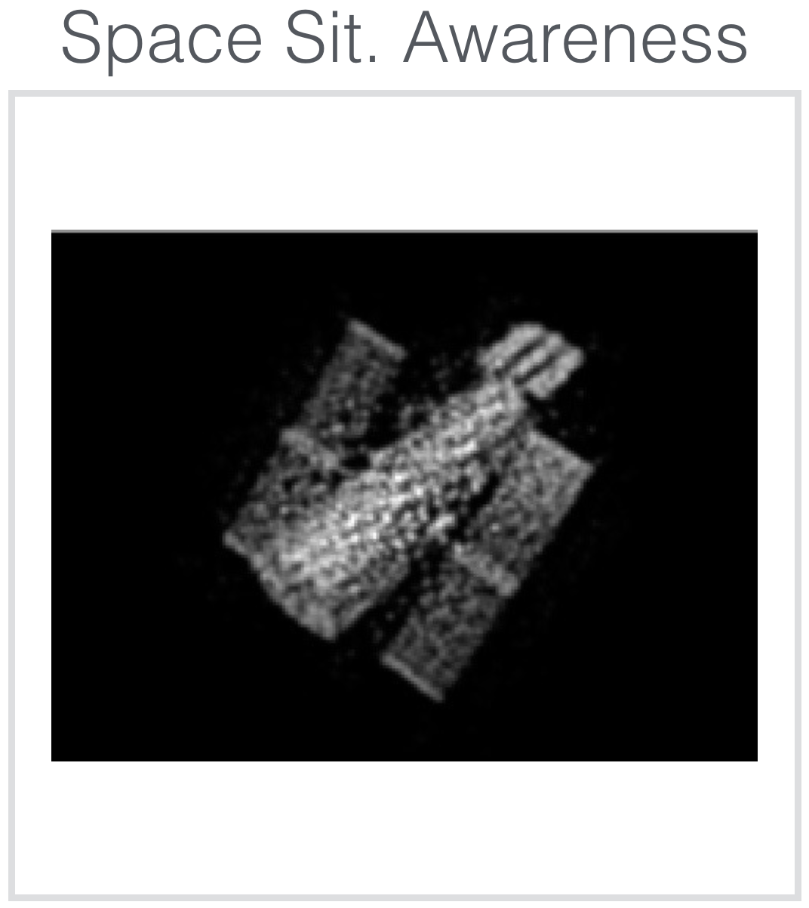
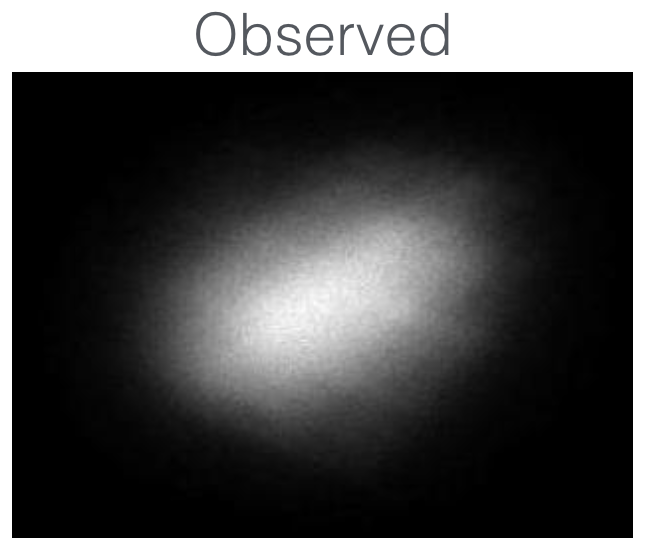

Space Situational Awareness (SSA) is concerned with monitoring all the objects in the sky. One particular goal is to know what satellites are out there, and what is their intent, using ground tellescopes. The challenge is that the turbulent atmosphere of the Earth causes severely distorted imagery:
Currently, the best existing agorithms take a few frames, and if the frames are good, they are capable of producing a good reconstruction. The challenge is to pick the right frames. For example, using a mix of dimensionality reduction and sparse representations we were able to produce the following results:
|  |
|---|
Reconstruction, however, is just a first step towards SSA. After a satellite image is reconstructed, it still remains to classify its model, determine its orientation parameters, and its intent. Our work investigates novel techniques to achieve these goals.